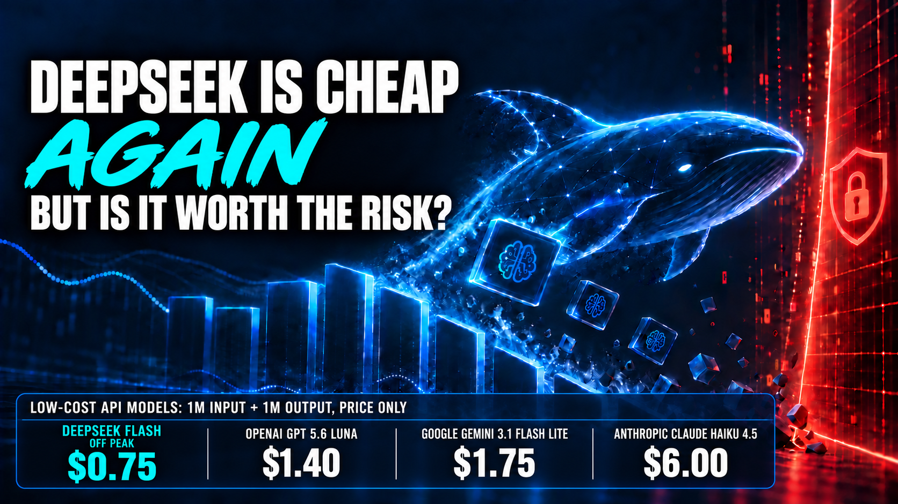

September 10, 2026
DeepSeek is the Chinese artificial intelligence company that seemed to come out of nowhere in early 2025. Its chatbot overtook ChatGPT as the most downloaded free iPhone app in the United States, while its low cost models rattled technology stocks and challenged assumptions about how expensive capable AI had to be.
DeepSeek built its reputation by offering surprisingly capable AI at bargain prices. For developers, solopreneurs, and small businesses, the appeal was obvious: why pay frontier model prices when a much cheaper model could handle much of the same work?
That calculation has become more complicated.
American AI companies have released smaller, cheaper models. The U.S. government has published sharply critical evaluations of DeepSeek's performance, security, and censorship. DeepSeek's own privacy policy confirms that personal data is processed and stored in China. And DeepSeek has changed its prices twice in less than a month.
Then, on September 10, DeepSeek officially released V4.1 Flash at prices below the V4 rates it introduced on August 16. DeepSeek never stopped being inexpensive, so "cheap again" is partly a joke about a pricing detour that lasted less than a month. The new model adds native visual understanding and is available through the API under the new deepseek-flash model name. DeepSeek also claims the new Flash model outperforms V4 Pro across performance, cost, speed, and task completion time.
The launch is confirmed. The performance claim has not yet been independently verified. But the release changes the question again.
DeepSeek may be the bargain option once more. Is the tradeoff worth it?

DeepSeek's Pitch: Frontier Capability Without Frontier Prices
DeepSeek describes V4 Pro as a 1.6 trillion parameter mixture of experts model that activates 49 billion parameters for each token. It offers a one million token context window and several reasoning levels. At launch, DeepSeek said V4 Pro rivaled leading closed models, led open models in agentic coding, and delivered world class reasoning.
V4 Flash was positioned as the smaller, faster, more economical option. DeepSeek said its reasoning approached Pro and matched Pro on simpler agent tasks.
Those are DeepSeek's own benchmark claims, and that distinction matters. Model companies choose the tests, configurations, and competitors shown in their launch materials. The results can be useful, but they are marketing evidence, not independent validation.
DeepSeek's broader value proposition is real. It offers a very large context window, inexpensive API access, OpenAI and Anthropic compatible interfaces, and open model distribution for organizations willing to operate the infrastructure themselves. For developers building high volume applications, those advantages can matter.
Sources: DeepSeek V4 launch, DeepSeek V4 model card
There Are Three Different Ways to Use DeepSeek
Before comparing prices or privacy, it is important to separate three very different ways people encounter DeepSeek.
1. The DeepSeek website and consumer apps
This is the familiar chatbot experience. A person visits DeepSeek's website or opens its mobile app, enters a prompt, and reads the answer. The user is not normally calculating token charges or building software around the model.
The consumer interface may appear free, but free access does not eliminate the privacy tradeoff. Prompts, uploaded documents, chat history, device information, and account information are handled under DeepSeek's privacy policy. This is the version a solopreneur might use casually to draft an email, summarize public material, or brainstorm ideas.
2. DeepSeek's API inside another product
An API lets software send requests to DeepSeek programmatically. This is how a product such as Hawking can use an AI model behind its own interface and workflow. The end user may never visit DeepSeek's website, but the application sends selected information to the model provider and receives a generated response.
The token prices in this article apply to this direct API usage, not to ordinary use of the DeepSeek chatbot. The application operator pays for input and output tokens, controls which information is submitted, and is responsible for telling end users how their data is handled.
Using an API can provide more control than asking employees to use a public chatbot. The application can remove unnecessary personal information, restrict which fields are sent, log model decisions, validate outputs, and route sensitive work to a different provider. But if the application calls DeepSeek's own API, the submitted data still reaches DeepSeek's infrastructure in China. Wrapping the API in a different interface does not change the underlying destination.
This is the most relevant distinction for small businesses building internal tools, customer features, or products like Hawking. The decision is not simply whether employees like the DeepSeek app. It is whether DeepSeek should be one of the model providers inside a controlled application architecture.
3. A DeepSeek model hosted by someone else
Some DeepSeek models can be operated by an independent cloud provider or on infrastructure controlled by the business. In that case, prompts do not necessarily travel to DeepSeek. Data location, retention, security, and pricing depend on the company operating the model.
Self hosting offers the greatest control, but it is not automatically simple or inexpensive. Large models require substantial computing infrastructure, monitoring, security, and technical expertise. A third party host can reduce that burden, but the business must evaluate that provider's contract and data practices rather than assuming the DeepSeek privacy policy describes the whole arrangement.
These three routes should never be treated as interchangeable. The model may have the same name, but the economics, data path, and business risk can be completely different.
The Price Went Up, Then Back Down
DeepSeek introduced new V4 pricing on August 16. It also adopted peak and off peak rates, with off peak usage costing half as much as peak usage.
For V4 Flash, fresh input cost $0.22 per million tokens off peak and $0.44 at peak. Output cost $0.66 off peak and $1.32 at peak. V4 Pro was three times as expensive.
The September 10 release reverses much of that increase. The new Flash pricing is:
- $0.15 per million fresh input tokens and $0.60 per million output tokens off peak
- $0.30 per million fresh input tokens and $1.20 per million output tokens at peak
- $0.003 per million cached input tokens off peak and $0.006 at peak
The notice defines peak periods as 01:00 to 04:00 UTC and 06:00 to 10:00 UTC, Monday through Friday. All other hours are off peak.
The new rates cut off peak fresh input by about 32 percent, output by about 9 percent, and cached input by about 57 percent compared with the August V4 Flash prices.
There is another important change. V4.1 Flash is now called through the deepseek-flash API model name. The older deepseek-v4-flash and deepseek-v4-flash-vision-exp names temporarily route to the new model. DeepSeek says V4 Pro will remain available at its existing price until 12:00 Beijing time on September 14. After that, and until V4.1 Pro arrives, requests to the Pro model will be routed to V4.1 Flash and billed at the lower Flash rate.
What changed in our own platform
We saw the operational impact immediately in the AI routing configuration behind our own OpenClaw platform. A live API check on September 10 found that our existing deepseek-v4-flash route still worked, but DeepSeek returned deepseek-flash, confirming that the older identifier was already serving V4.1 Flash. The legacy deepseek-chat and deepseek-reasoner identifiers also returned the same Flash model in our test. That meant a route we had treated as a fallback was no longer a true fallback at all.
The release also made our internal cost assumptions stale. Our catalog still expected $0.14 per million input tokens and $0.28 per million output tokens. The new off peak price is $0.15 for fresh input and $0.60 for output, while cached input falls to $0.003. Without an update, our cost reporting would materially understate output expense.
Timing matters too. During U.S. daylight saving time, DeepSeek's weekday peak windows translate to 9:00 p.m. to midnight and 2:00 a.m. to 6:00 a.m. Eastern. Our normal daytime activity remains off peak, while work after 9:00 p.m. can cost twice as much. The practical response is to use the canonical model name, remove duplicate fallbacks, update cost tracking, and confirm that a genuinely independent provider comes next in the routing chain.
This is a useful lesson for any small business using multiple AI providers. A model update can silently change what an alias serves, collapse two apparent fallbacks into one, and make an internal cost dashboard inaccurate. Checking only whether requests still succeed is not enough.
Developers may receive a different model through an endpoint they already use. Any production system should be retested when the routing changes.
Sources: DeepSeek customer notices received September 9 and 10, 2026; DeepSeek September 10 change log; DeepSeek API pricing
An Apples to Apples Price Comparison
There are two separate comparisons to make: consumer chat access and API usage. Mixing them produces misleading conclusions.
Each company sells access to its models through at least two different products. One is its own website or app, where people chat with the model directly. The other is an API, where developers pay to put the model inside software such as Hawking. Paying for one normally does not buy the other.
A ChatGPT Plus subscription does not include OpenAI API credits. Claude Pro does not include Anthropic API usage. A Google AI plan does not function as a general Gemini API allowance, although some plans include limited developer benefits or cloud credits. DeepSeek's free chatbot does not make calls from Hawking or another application free.
Consumer website and app access
DeepSeek, OpenAI, Anthropic, and Google all provide model access through their own interfaces. This is what an individual sees when choosing a chatbot or productivity assistant:
- DeepSeek web and app: advertised as free. V4 Pro is available through Expert Mode and V4 Flash through the standard experience, subject to service limits. Direct API usage is a separate prepaid service.
- ChatGPT Plus: $20 per month for higher access to OpenAI models and ChatGPT features, subject to usage limits. OpenAI API usage is billed separately.
- Claude Pro: $20 per month, or about $17 per month when paid annually, for more usage and access to additional Claude models and features. Anthropic API usage is billed separately.
- Google AI Pro: $19.99 per month for expanded Gemini model access, including Gemini 3.1 Pro, plus storage and Google product integrations. Gemini API billing remains a separate product, although the subscription may include specific developer benefits.
This interface comparison is not a token price contest. Users generally pay a subscription, or use a limited free tier, rather than receiving a bill for every input and output token. The paid U.S. plans also bundle capabilities such as research, coding tools, image generation, cloud storage, productivity integrations, and higher limits. DeepSeek does not publish a dollar value for an equivalent bundle. For a person who only wants a general chatbot, DeepSeek's free access is attractive. For someone buying an integrated productivity product, the available models, features, privacy terms, and usage limits must be compared along with the monthly fee.
Sources: DeepSeek app, ChatGPT Plus, Claude Pro, Google AI plans
API comparison for an application such as Hawking
API access is a different purchase. Hawking sends selected information to a model provider programmatically, and the Hawking operator pays the resulting API bill. The end user does not need a personal subscription to that provider's chatbot, and a personal subscription does not pay Hawking's API bill.
For API usage, we can compare the same workload across providers. The example below uses one million fresh input tokens and one million output tokens. It assumes standard synchronous processing, no cache hits, no batch discount, and no extra charges for tools or web searches. This is a price comparison among each provider's lower cost models, not a claim that they provide equal capability.
Lower cost execution models
- DeepSeek V4.1 Flash at the off peak rate: $0.75
- OpenAI GPT 5.6 Luna: $1.40
- DeepSeek V4.1 Flash at the peak rate: $1.50
- Google Gemini 3.1 Flash Lite: $1.75
- Anthropic Claude Haiku 4.5: $6.00
Under those assumptions, DeepSeek wins off peak. At peak, GPT 5.6 Luna has a lower input rate, while the two models have the same $1.20 output rate. Gemini Flash Lite is close behind. Claude Haiku is substantially more expensive on raw tokens.
Higher capability and balanced models
Using the same workload:
- DeepSeek V4 Pro off peak: $2.64
- DeepSeek V4 Pro at peak: $5.28
- Google Gemini 3.5 Flash: $10.50
- Anthropic Claude Sonnet 5: $12.00 at the currently listed $2 input and $10 output rates
- OpenAI GPT 5.6 Terra: $14.00
- OpenAI GPT 5.6 Sol: $24.00 at its current promotional rates
- Anthropic Claude Opus 5: $30.00
This second list compares higher capability purchasing options, but it does not prove equal quality. DeepSeek says V4 Pro rivals top closed models. Commerce's 2026 evaluation placed V4 Pro in a broadly similar aggregate capability range to GPT 5.4 mini, while finding meaningful weaknesses on some reasoning, software engineering, and cyber tests. No independent evaluation yet establishes where V4.1 Flash belongs relative to the current OpenAI, Anthropic, and Google lineups.
The defensible conclusion is about price, not parity: DeepSeek's new rates are lower than the listed Anthropic rates and most Google and OpenAI rates. Whether it is less expensive per successful business outcome depends on the task.
Sources: DeepSeek API pricing, OpenAI model pricing, Anthropic API pricing, Google Gemini API pricing
Where caching and batch processing change the result
DeepSeek's new cached input rate is exceptionally low, beginning at $0.003 per million tokens off peak. That can create a major advantage for applications that repeatedly send the same long instructions or reference material.
But caching systems are not identical. Anthropic charges separately for cache writes and reads. OpenAI discounts cached input. Google charges for cached tokens and, in some cases, cache storage time. Batch processing can reduce some competitors' input and output rates by 50 percent. A comparison that gives DeepSeek a cache hit while charging every competitor for fresh input is not apples to apples.
For Hawking, the right calculation should come from actual traffic: fresh input, reusable input, output, reasoning tokens, peak timing, retries, and successful completion rate. Posted rates are the starting point, not the final unit economics.
Token prices are not the same as completed work costs. A model that needs more reasoning tokens, produces more failed attempts, or requires more human correction can cost more even when every token is cheap. Latency, reliability, tool use, and the percentage of tasks completed correctly matter more than the price printed on the rate card.
What the U.S. Government Actually Found
The government story requires more nuance than the headlines suggest.
In September 2025, the Commerce Department's Center for AI Standards and Innovation evaluated DeepSeek R1, R1 0528, and V3.1. It found that leading U.S. models outperformed DeepSeek on most tests, with the largest gaps in software engineering and cybersecurity. It also found that GPT 5 mini cost 35 percent less on average than V3.1 at a similar capability level.
The security findings were more concerning. DeepSeek models were more likely to follow malicious prompt hijacking instructions and were highly susceptible to jailbreaks. The evaluation also found censorship aligned with Chinese Communist Party narratives in models downloaded directly from public repositories, meaning the behavior was not limited to DeepSeek's hosted chatbot.
But Commerce published a newer V4 Pro evaluation in May 2026. That report found DeepSeek's selected benchmarks made V4 look roughly competitive with frontier U.S. systems. On Commerce's separate tests, V4 Pro performed worse on some reasoning, software engineering, and cyber evaluations.
The price conclusion was mixed. Commerce found V4 Pro cheaper than GPT 5.4 mini on five of seven comparable benchmarks, with individual results ranging from 53 percent cheaper to 41 percent more expensive.
Calling DeepSeek "third rate" is therefore political rhetoric, not a complete description of the latest evidence. DeepSeek trails leading U.S. models on several difficult tasks, but the government's own 2026 testing placed V4 Pro in a broadly comparable capability range and found it cheaper more often than not.
Sources: CAISI evaluation of DeepSeek models, CAISI evaluation of DeepSeek V4 Pro
The Privacy Risk Is Not Hypothetical, but It Should Be Stated Accurately
DeepSeek's privacy policy says its services collect prompts, uploaded files, chat history, account information, device identifiers, network information, and usage data. It says DeepSeek directly collects, processes, and stores personal data in the People's Republic of China.
The policy also says personal data may be used to improve and train its technology, although users can opt out, and that information may be shared with public authorities when DeepSeek believes disclosure is required by applicable law or a government request.
This does not prove that every prompt is routinely handed to the Chinese government. The accurate conclusion is that information submitted to DeepSeek's website, apps, or direct API is handled by a Chinese company, on infrastructure in China, under Chinese legal jurisdiction. For many U.S. businesses, that creates an unacceptable government access, contractual, and legal recourse risk.
The distinction between direct use and self hosting also matters. Running an open DeepSeek model on infrastructure you control is not the same as sending prompts to DeepSeek's API. Using a third party host introduces that host's privacy and security terms instead. The model name alone does not tell you where your data goes.
Source: DeepSeek privacy policy
Competitors Accuse DeepSeek of Extracting Their Models' Capabilities
Anthropic reported in February 2026 that DeepSeek, Moonshot, and MiniMax used approximately 24,000 fraudulent accounts to generate more than 16 million exchanges with Claude. Anthropic characterized the activity as industrial scale capability extraction intended to improve competing models.
OpenAI separately told a House committee that it found continued DeepSeek activity consistent with adversarial distillation. OpenAI said accounts associated with DeepSeek employees attempted to evade restrictions and access U.S. models through third party routers that masked their source.
These are serious and documented allegations. They are also claims made by DeepSeek's direct competitors, not findings from a court. They should be treated as evidence about vendor governance and intellectual property risk, not as settled legal conclusions.
Sources: Anthropic on distillation attacks, OpenAI submission to the House Select Committee
When DeepSeek Makes Sense
DeepSeek can be a rational choice for:
- Public, nonconfidential brainstorming, rewriting, translation, and summarization
- High volume batch work that can run during off peak periods
- Agent workloads with high prompt cache reuse
- Coding experiments using public or nonproprietary code
- Tasks whose outputs can be tested automatically and inexpensively
- Self hosted deployments where the organization controls the infrastructure and understands the operational burden
The strongest case is sanitized, high volume work where a small price difference compounds across millions or billions of tokens.
When It Does Not
DeepSeek's direct service is a poor default for:
- Customer records or client documents
- Health, financial, legal, or employment information
- Passwords, credentials, or access tokens
- Proprietary source code and unreleased product plans
- Regulated work requiring contractual data residency, retention, or audit guarantees
- Research where political censorship or viewpoint distortion could affect the answer
- High consequence decisions that cannot be independently verified
For most solopreneurs and small businesses, the absolute savings will be modest. Saving a few dollars on API usage is not worth exposing a client document, trade secret, or regulated record.
The Bottom Line
DeepSeek is not a toy, and it is not simply a third rate copy. It is a capable model provider whose aggressive pricing continues to pressure the entire AI market. If V4.1 Flash performs as DeepSeek claims, its off peak price and capability combination could be exceptional.
But the bargain comes with conditions.
The direct service processes data in China. Government testing has documented censorship and weaker security behavior. Competitors have made credible, detailed accusations about adversarial distillation. Prices and model routing have changed rapidly enough to complicate production planning. And the newest performance claim cannot yet be independently checked.
For individuals and small businesses, the practical answer is straightforward: use DeepSeek for sanitized, low stakes, verifiable work when the price advantage matters. Use a provider with stronger contractual protections and acceptable data jurisdiction for sensitive business work.
Do not choose an AI model based on ideology. Do not choose it based on the cheapest token either. Choose it based on the task, the data, the cost of failure, and who you are trusting with the information.
FutureInSites helps small businesses choose and deploy AI systems based on the task, the data, and the real cost of failure. Get in touch if you want to evaluate the models and data routes inside your own AI workflow.